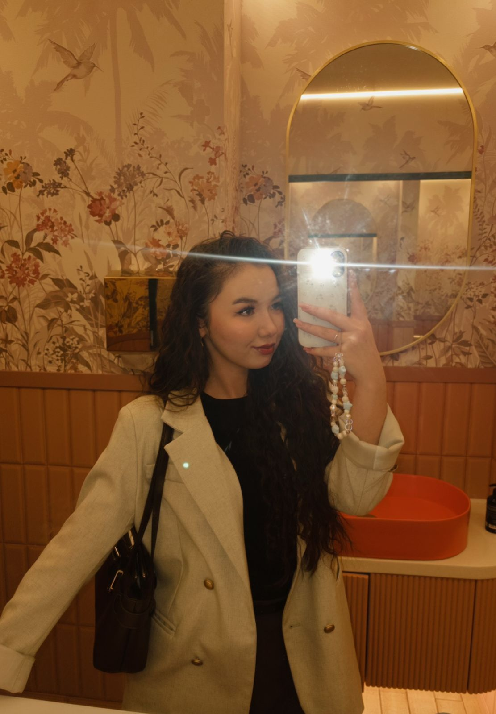
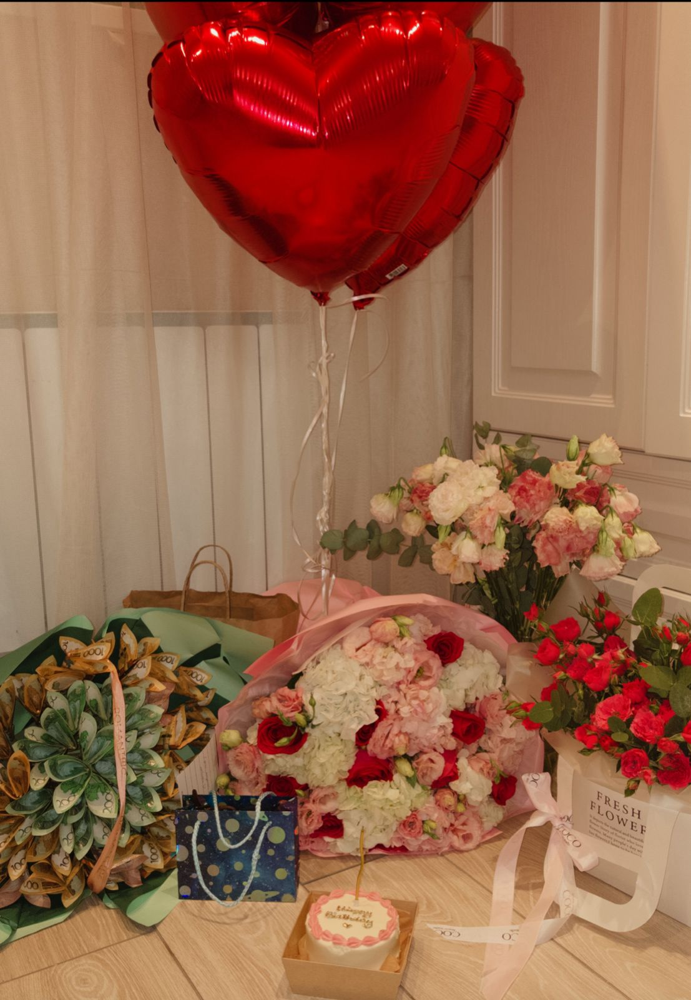
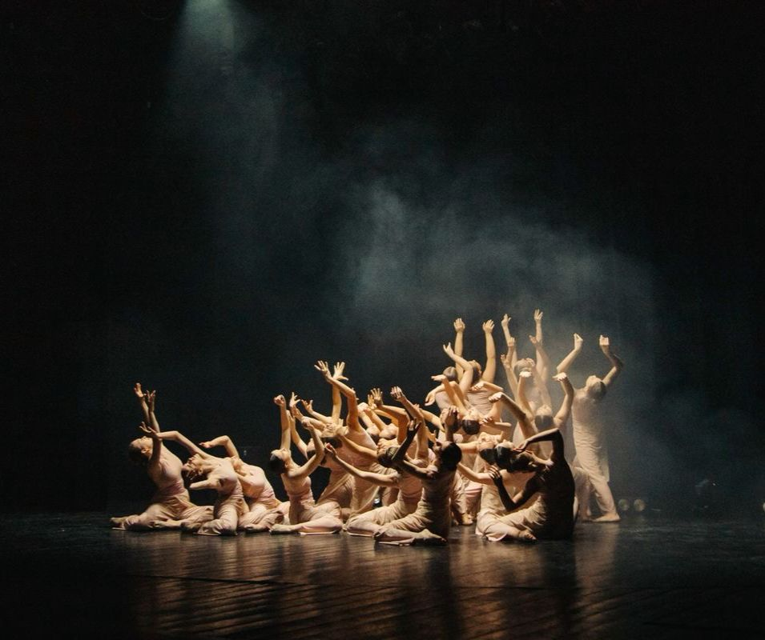

|
 Photography Как я говорила, я люблю фотографировать, ведь через фотографию можно передать атмосферу,эмоций того времени,момента. |
 Dance & Music Танцы помогают мне выпускать эмоции, которые накапливаются, и расслабляться.Через ритм музыки я нахожу ритм жизни, и всё это помогает мне снять стресс и выразить свои эмоции. |